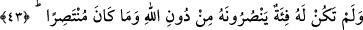

Fakir (Bursevî) der ki: Kişi bir şeye sâhip olmak için harcama yapar. Bu sebeple
onun sarf ettiği şeye olan üzüntüsü, bağın helâkine üzülmesinden öndedir. Çünkü
harcadığı, bağın bedelidir. Nitekim örfen de bu böyledir. Pişman olan bâzı kimseler:
“Bunun için şu kadar mal harcadım.” der. İşte böylece o kimsenin harcadığı mala
duyduğu pişmanlıkla ömrü helâke dönmüş olur.
“Bağın” hurma ağaçlarıyla çevrili olan üzüm bağının “çardakları yere çökmüştü”
yâni asmaları için dikilen direkler yıkıldı. Asmalar direklerin üstüne düştü, direkler de
onların üzerine devrildi. Âyette hurmalıkların ve ekinlerin durumu değil de, üzüm
bağının harâb olduğunun belirtilmesi, esas malın üzüm bağı olmasındandır. Denilir ki
Allah bağın üzerine bir ateş gönderdi ve onu yaktı, suyunu da yere batırdı.
“Ah, keşke ben Rabbime hiçbir ortak koşmamış olsaydım!” diyordu.” Böyle
dövünmekle sanki îman ehli kardeşinin öğüdünü hatırlamış ve başına gelenlerin Allah’a
ortak koşmaktan kaynaklandığını anlamış ve temennînin kendisine fayda sağlamadığı bir
vakitte Allah’a hiç ortak koşmamış olmayı dilemiştir. Zâten onun inanma arzusu da
dünyalık elde etme hırsına bağlı olduğu için tevbe ve tevhîd değildir. Çünkü
samîmiyetten uzaktır.
Şeyhzâde, En’am sûresi tefsirinde şöyle der: “Allah’a inanmana ve O’na kulluk
etmeye rağbet ancak sırf Allah için inanmak ve O ibâdete lâyık olduğu için kulluk etmek
şartıyla rağbet sayılır. Yoksa sevab talebiyle ya da ceza korkusuyla olan rağbetin
faydası yoktur.”
Mesnevî’de der ki:
O, nedâmet zahmetinin sonucudur...
Define gibi aydın olan akıldan gelmez.
Zahmet geçti mi o nedâmet de yok olur gider...
O tevbe ve nedâmet, toprak değerinde bile değildir.
O adam, tevbe eder ama akıl piri ona
“Dünyaya döndürülseler, yaptıklarını yine yaptıklarına geri dönerler.” (el-En‘âm,
6/28) diye bağırır durur.
43. Kendisine Allah’tan başka yardım edecek destekçileri olmadığı gibi kendi
kendini de kurtaracak güçte değildi.
“Kendisine Allah’tan başka” helâki başından savmak, musîbeti geri çevirmek ya da
onun benzerini getirmek sûretiyle “yardım edecek destekçileri olmadığı gibi kendi
kendini de kurtaracak güçte değildi.” Çünkü bu durumda ona yardım etmeye sadece O
kadirdir, başkası değil. Fakat inkâr etmesi ve günahları yüzünden yardımsız bırakılmayı